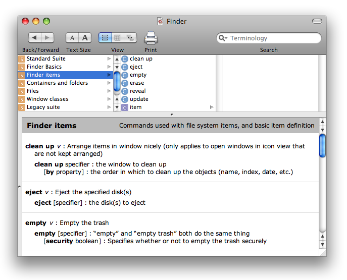

|
IntroductionWhy do these guidelines exist?These guidelines serve a similar purpose to the Human Interface Guidelines: to promote basic design principles and consistency in the scripting interface of all Macintosh applications. The design principles are all about being task-specific; the more closely you match the user's mental model of your application, the more useful it will be. Consistency in the scripting interface is valuable for the same reasons it is in the regular interface: it makes it easier for users to learn new applications and decreases the chances that they will make mistakes by following old habits, which in turn reduces the number of support calls you will have to field. Additionally, consistency among applications promotes AppleScript as a coherent system, not just a thin bit of glue holding together a hodgepodge of what are practically different languages. By following these guidelines, you can make your users happier, your own life easier, and help promote AppleScript as a useful tool. What is scripting?Scripting is programming using a scripting language. That wasn't very helpful: what is a scripting language? A scripting language is a task-specific programming language, as opposed to a systems programming language such as C, C++, or Java. Systems programming languages are designed to build applications from the ground up and are very general purpose – you can build anything, but you also have to build everything, often out of very small pieces. Scripting languages, on the other hand, are designed with a particular task in mind. They can express things appropriate to the task very easily, but are awkward or even mute on other matters. For example, Being task-specific is a good thing for several reasons. Not only does it let you write less code, but humans do much better at cognitive tasks (like programming) when the content is set in a familiar domain. Therefore, a publisher who is bewildered by pointers and bit arithmetic would still be able to write a complex script that works in terms of text flows and illustrations. When thinking about what is task-specific, it is helpful to consider not only what the task is, but also what it is not. For example, the publisher above is concerned with box measurements and kerning, but does not want to be concerned with memory management or declaring variable types. Accordingly, scripting languages tend to allocate and deallocate memory automatically, not require variable types, and generally take care of a lot of the details that a systems programming language would require you to deal with. All this focus and convenience comes at a cost, of course: some scripting languages are wildly inappropriate for some problems, and programs written in a scripting language generally run slower than an equivalent one written in a systems programming language. On the other hand, the scripter might not be able to write the faster version at all, or might simply not have the time, and an unwritten program runs only as fast as a human can do the task by hand. For a complementary take on this subject, see John Ousterhout's paper Scripting: Higher Level Programming for the 21st Century. What is scriptability?Scriptability is the ability of your application to be controlled by a script – that is, a program – rather than a person armed with a keyboard and mouse. By making your application scriptable, users can customize it, tie it into automated workflows, and generally make it more useful to themselves in ways that were too specific for you to bother with, or that you never even imagined in the first place. There are several ways to approach scriptability, but the most interesting and useful one is to expose your application's model layer. This term comes from the model-view-controller (MVC) design pattern: the model layer holds the application data and logic for operating on it; the view layer presents that data in a visible form, say in a window; and the controller layer mediates between them, updating the view as the model changes and updating the model as the user manipulates the view. For a full description, see The Model-View-Controller Design Pattern. Exposing the model rather than the view has two key advantages. First, the model is generally more stable than the view. As you produce new versions of your application, buttons may move and commands may change, but what your application actually does is relatively constant. If scripting is in terms of the model, then existing scripts and scripters' knowledge stay valid. Second, the model is more useful, because it has to do with the actual task, rather than how to do it. For example, if you want to change the name of a file in the Finder, you can say to set the name of that file, rather than describing the view-oriented steps: select the file, click on the name part, and type some characters. What is AppleScript?AppleScript is a scripting language created by Apple Computer, and is the primary language for controlling scriptable Macintosh applications. It has an English-like syntax, is strongly object-oriented, and has several features that make it uniquely well-suited to working with large collections of objects. For full details, see the AppleScript Language Guide. AppleScript approaches the problem of being task-specific in an unusual way. The base language does very little, and has no task-specific functions at all. What it does do is provide a framework into which you can plug any number of task-specific functions, namely applications. Depending on which object you are referring to, the vocabulary changes. For example, when talking to the Finder, you can speak of disks, folders, and files; when talking to Mail, you can speak of messages and mailboxes; and so on. In other words, applications are responsible for providing task-specific functions for the tasks that they know about; AppleScript provides the basic infrastructure and glue to pass information from one application to another. BasicsYour application's scripting interface is advertised to the rest of the world, both the system and human users, by your dictionary. It lists all the objects and commands your application understands, along with how they are related and simple explanations of what they mean. AppleScript reads it to determine how to compile scripts, and it is the primary reference for scripters who want to know what your application can do. (This is not to say that it should be the only reference you provide. It shouldn't; ideally, you will also provide documentation and sample scripts. The dictionary is required, though.) This section describes some general guidelines for creating your dictionary. Later sections contain specific guidance on particular topics such as objects or commands. Opinion varies on whether you should write your whole dictionary first and then implement it, or write and implement iteratively bit by bit. Both have their advantages – the former makes it easier to be consistent, the latter makes it easier to ship at any time – choose whichever works for you. Dictionaries currently come in three different formats:
To see your dictionary as a user would, open it in Script Editor: launch Script Editor, choose Open Dictionary from the File menu, and select your application. If you are new to scripting, examine some other dictionaries. The Finder is a good example: it follows the guidelines reasonably well, and is complex enough to be interesting, but simple enough to be comprehensible. Figure 1: Part of the Finder dictionary.  Before You BeginThink about scriptability earlier rather than later.Thinking about how to make your application scriptable early in the design process will save you considerable time and agony. First, it is always easier to implement a feature that is planned for from the beginning than to bolt it on at the end. Second, and more importantly, scriptability forces you to think about your model. If you know what your conceptual model objects are, you can create implementation objects that match. This not only makes scriptability easier, it's just a good design practice. Know your model.Scriptability means being task-specific, and being task-specific means revealing the things your application does: that is, your model. Therefore, it is essential that you have a firm grasp of your application model. What are the objects and commands that define what your application does, and how do they relate to each other? For example, Mail has mailboxes, mailboxes contain messages, messages have addressees and text and can be sent or forwarded, and so on. Notice that this says nothing about buttons, menu commands, or dialogs. Remember: model, not view. If you can't figure out what your model is, or think you don't have one, you're probably either looking at it the wrong way or your application design needs work. Talking to your users can be helpful here – ask them what they do, and listen for the common objects and commands. Know your users.Being task-specific means being user task-specific, not programmer task-specific. Think of your application in terms of things users do with it, not in terms of how you, the implementor, make things happen behind the scenes. For any object or command in your dictionary, it should be immediately obvious to a normal user of your application what it is. If you have a very large and complicated application, knowing your users is also helpful in prioritizing what to make scriptable first. You are not obliged to do it all at once. Know AppleScript.You do not have to learn AppleScript in every detail, but you should develop a feel for typical application command syntax, and for what AppleScript will do for you (and you therefore do not have to do yourself). The AppleScript Language Guide is the official Apple documentation for AppleScript, but there are a number of third-party books available as well. Playing with a scriptable application that follows the guidelines, such as the Finder, is also a good way to learn. Use an application framework.A large part of implementing scriptability properly involves implementing standard behavior. Using a framework will eliminate much of the drudgery and reduce the number of errors (or at least ensure that you have the same errors as everyone else using the framework). Apple's Cocoa and Metrowerks' PowerPlant both have good support for scriptability. Designing Your DictionaryStay on-task.Yes, we've said it before, but it's important. Good scriptability is focused on tasks that are meaningful to the user. If you find yourself talking about error codes, bitfields, or other things that the user does not normally see, then you are drifting off-task. Also remember that tasks are based on the model – that is, the what – not the view, which is the how. If you find yourself talking about buttons and menus (and you are not working on an interface-building application), then you are attempting to script the view. Some view scripting is important – see Scripting the View – but it is not the focus. If you have trouble thinking of tasks, remember these two directives instead: talk to the user, not the programmer; and script the model, not the view. If you find yourself having trouble expressing your model in a way a user would consider sane, it may be a sign that your model needs fixing. (It may also be a sign that you need a break, so try that, too.) This happens sometimes: viewing your model from a different angle can reveal problems that were not apparent before. Perhaps one complex operation needs to be split, or two merged, or maybe you didn't understand the task domain as well as you thought you did. Go ahead and fix it, and fix it in your graphical interface too, if you can – you'll have a better application for it. Be object-oriented.Being object-oriented means that your scripting is mostly organized around objects, not commands. Objects can respond to commands – documents can be printed, messages can be sent, and so on – but the focus is on the objects, not the commands. This has several benefits: First, it matches how the rest of AppleScript, and to some extent the Macintosh as a whole, works. It is therefore more consistent and makes more sense to users. Second, it lets you exploit various features of AppleScript, like Third, it lets you create a smaller, more comprehensible dictionary, because you can apply a multiplicative effect: Be accurate.Make sure you actually support everything you claim to in your dictionary. Be conservative in your dictionary if you need to; sdef provides a way to hide terms if you feel they are not yet ready for prime time. (So does the older On a similar point, make sure that the types your dictionary defines for properties and parameters are accurate. Bear in mind that accurate refers to the scripter's (that is, the user's) perspective, not the implementor's. For example, there is no file URL type in AppleScript, but there is a file type, so even though your application fetches the parameter as Don't re-invent the wheel.The less you invent, the more consistent you will be, and the less your users will need to learn.
A corollary to this is that you will probably not need to define many of your own commands. The standard commands take care of basic application functions and object manipulation ( It's OK to do less than your GUI.Some operations possible through your graphical user interface may not be appropriate for a scripting interface, because they assume a level of dynamic interaction that simply isn't practical – for example, freehand sketching, or scrubbing through a movie. Do not feel obligated to include a function in your scripting interface just because it exists in your graphical interface. Also, it may not be practical to make everything in your application scriptable all at once: you don't have the time, you expect a feature to change in the next release, whatever. Provide what you can, make it useful, and do the rest later. It's OK to do more than your GUI.Scriptability is a great way to expose features in your application without having to implement a graphical interface for them. Sometimes these features are implicit in how AppleScript works: for example, the Finder has no command to delete files that meet a condition, but the Get feedback.Find some users who care about scripting, let them play with your application, and listen to what they say. You may find some on staff already – testers tend to be fond of scripting, because it makes their jobs easier. When You Think You're DoneTest, test, test.Scriptability needs testing just like any other feature. Knowledge of AppleScript will be very helpful here, not just so you can write scripts, but so you can truly exercise the language. Newcomers often do not grasp the implications of object specifiers, and create commands that do not work with ranges or filter clauses. Get more feedback.Internal development and testing is all well and good, but nothing substitutes for real-world usage. Let real users try your scriptable application. If you discover a mistake in your scriptability after you ship, you can still change it without breaking existing scripts by exploiting synonyms – see the sdef man page for details. StyleThis section describes style guidelines for your dictionary: organization, how to name things, comment style, and so on. GeneralUse suites as appropriate.Dictionaries are broken into suites, which are clusters of related classes and commands. These are purely for the reader's benefit, and have no impact on your application or AppleScript. There is no technical limit, either upper or lower, on the number of items in a suite, but ten to fifteen is considered a comfortable size. However, do not force artificial distinctions just to break up a large suite or combine small ones – the ultimate point is to help the user find things. Put system-defined suites first, followed by your own. Sort them in order of generality or frequency of use, or, failing that, alphabetically. Within a suite, and for properties in a class, order items in some sensible manner. For a sufficiently small group, you may sort by importance or frequency of use, but this can be hard to judge. Alphabetical ordering is always a good fallback. Within a command, order the parameters in a way that makes sense in a sentence. If this is impossible, use alphabetic order. Be accurate with types.When specifying the type of a property or parameter, use the most specific type that is both accurate and meaningful to a user. Often, this is a simple choice of a single application-defined class or a primitive data type, but sometimes it's more interesting:
Things that refer to objects should be objects.If a property or parameter refers to an object, its type should be an actual object, never data that signifies an object. Consider this command from many web browsers that breaks this guideline (and several others): CloseWindow [ID integer] -- ID of the window to close. (Use -1 for topmost) [Title string] -- Title of the window to close. The correct way to do this is to define a A few words about files Files in AppleScript are considered to be objects. Therefore, properties and parameters that point to files should also be Choosing Language ElementsProperties vs. elementsObjects may contain other objects; these are either named properties ( Properties vs. commandsSometimes setting a property can cause an immediate change on the screen. In deciding whether to use a property in this situation, a helpful rule is: When an action is initiated, use a command; when an attribute changes (even if it produces immediate visible results), use a property. Another way of looking at this is if a visible change is immediate, use a property, but if an action has a duration, use a command. For example, the following command causes an immediate change on the screen: set the font of the third paragraph to "Courier" Even though setting the font property creates a visible change, the font is still an attribute of the text, not an action. On the other hand, naming a property or enumerator set playing to true set [the] status to playing The play the movie "Wowie Zowie" start playing the movie "Wowie Zowie" Note that the commands are EnumerationsAn enumeration is a set of constants (enumerators) which represent a fixed set of choices. Use an enumeration as the type of a parameter or property whenever there is a choice to be made from a specific list of possibilities. This helps the user see that there is a choice, and lets them know exactly what the choices are. Table 1 : Enumerations
Naming RulesUse user terms, not implementation terms.Remember that you are speaking to a user, and should therefore use the terms they will find familiar. Ideally, the terms used in your graphical interface, scripting, and documentation should all match. Use the the test.AppleScript allows you to add or remove the word set the service to "America Online" if the priority is high then ... Do not use Use lowercase.Use all lowercase letters for your terms, except as required for proper names, trade names, and acronyms. Table 2 : Capitalization
Use multiple words, not InterCaps or underscores.If a term consists of more than one word, separate the words with spaces. Do not join the words together with capital letters or underscores. Again, trade names are an exception to this. Table 3 : Examples.
Terms must follow AppleScript identifier rules.Each word in a term must be a valid AppleScript identifier. That means they must begin with a letter or underscore, and be followed by any number of letters, numbers or underscores, the same as C-like languages. Punctuation is not allowed; underscores are not recommended as mentioned above. Do not create commands that look like objects, or objects that look like commands.Creating terms that look like other parts of speech will confuse scripters and lead them to try things that will not work. Consider the Standard Additions command Do not start property names with imperative verbs.Starting property names with verbs leads to confusion when the property appears in the middle of a sentence. For example, naming a property set disable call waiting to true if disable call waiting then ... Also, the name disable call waiting looks like a command. A user might be tempted to say disable call waiting This will compile and run, but does not disable anything – it merely returns the current value of the property. You can prevent such confusion by using a participle instead. This is somewhat clearer: set call waiting enabled to false if not call waiting enabled ... Even better would be to name the property set call waiting to enabled if call waiting is disabled ... Avoid beginning terms with language keywords.Using a language keyword as the first word in a term may make it impossible to use that keyword in certain contexts. For example, consider an application that defines a It is possible to successfully begin terms with keywords – consider the Standard Additions command Table 4 : Reserved words in AppleScript 1
Avoid using 'is' in Boolean property and parameter names.This is a specific case of the previous rule: Also, the AppleScript parser pulls a few special tricks on Boolean properties and parameters that make them read better without the is. AppleScript will change send message "Fred" queuing true it compiles to send message "Fred" with queuing Also, tests of Boolean properties can be written specially: instead of saying if miniaturized of window 1 is true then ... if window 1 is miniaturized then ... If the property were named Avoid using 'of' in a name.
Avoid using 'end' as the first word in a command.Several AppleScript constructs use Table 5 : Examples of terms.
Comment styleAny dictionary term can have an associated comment (sdef's and suite terminology's
ObjectsBecause AppleScript is so object-centric, defining a sensible object and class hierarchy and making it behave in all the standard ways is perhaps the most important part of creating a good scripting interface for your application. To paraphrase Fred Brooks slightly: Show me your code and conceal your objects, and I shall continue to be mystified. Show me your objects, and I won't usually need your code; it will be obvious. Designing Your ObjectsAs always, the basic rule is be task specific. Reveal objects that have a direct bearing on things the user will do with your application. Expose the model, not the interface. Do not reveal implementation details – users will not care, or worse, it will confuse them. There are two different hierarchies to consider: the inheritance hierarchy – what behaves like what – and the containment hierarchy – who owns what. Make your hierarchies match what a user would expect. InheritanceAppleScript supports single inheritance, so you can define a class to be just like another class, but with additional properties or elements. A subclass does not have to define any new parts; sometimes just being a different class is enough. Mail's Use inheritance to effectively shrink your dictionary by removing redundant information. If several classes share common elements or properties, make them all inherit from a base class that defines the common parts. Do not use inheritance if a class has only one descendant, because that just complicates the dictionary. ContainmentAppleScript defines two kinds of containment relationships: elements and properties. In entity-relationship modeling terms, an element is a to-many relationship, and a property is either an attribute or a to-one relationship. (Entity-relationship modeling distinguishes between primitive data and other objects; AppleScript does not.) A property is a single value, while there may be any number of elements. Special cases such as zero-or-one or any-number-in-a-range can be emulated using properties or elements with additional behavior, as shown here: Table 6 : Containment terminology.
In general, prefer an element to a property whose value is a list of objects – it is more consistent and is easier to implement. In particular, do not do something like this: class widget (pl. widgets)...
class box:
property widgets: list of widget
This is especially evil, because it makes If you do implement such a property (see the standard Object SpecifiersAll objects in an application, aside from the root
length of word 1 of every paragraph of document "Smith Project"
The underlined portions show each component. Notice that each component uses a different key form. The complete set of key forms is listed in the table below. Most key forms imply the existence of a particular property for that object: if the object has that property, then it should support that key form, and vice versa. Table 7 : Object Specifiers
Additionally, allowable key forms for a container are determined by the nature of the container and its elements. This also determines what locations, if any, are meaningful for the In an ordered container, the user determines exactly how the items are arranged. Any item can be placed before (or after) any other item using In an unordered container, the data itself determines the order of the items – for example, alphabetical order – or there simply is no particular order. While you can ask for the In an uncounted container, the application does not know how many items there are. All index forms are meaningless, as is the idea of Table 8 : Object Specifier Types
Key FormsThis section gives behavior details for each of the key forms. It does not give syntax or usage details; for that, see Chapter 5 of the AppleScript Language Guide. Arbitrary If you support this key form, it should return a genuinely random object, not always the same one. This key form is useful whenever a script needs random behavior. For example, a script could select a random signature in Mail by saying Every
Filter For historical reasons, Filter is considered its own key form, though it would be more accurate to think of it as a modifier to index-based key forms (index, arbitrary, middle, range, and every). While the filter key form is most often used with a test on a property of the object (such as paragraphs where it starts with "The" albums where it contains photo "White Rabbit" documents whose first paragraph contains the word "Metacortex" In theory, any boolean expression should be valid, but AppleScript currently cannot deal with function calls in a filter expression. If an object under consideration does not have an attribute specified in the filter, it is not an error – consider the value to be ID Returns a single object whose Index Item indicies should match the user's model of a first-to-last or front-to-back ordering. (In fact, If the items are unordered as defined above, then ideally the index should match how the items are currently displayed. Failing that, pick a consistent order – say, alphabetical – and use that. Named Returns a single object whose Range Ranges may be specified as either two indicies or two endpoint objects, which are included in the range. If either endpoint does not exist, or if they are not both in the same container, return an error. Guidelines for the meaning of indicies apply as for the index key form above. The order of the endpoints does not matter – always return the objects in order, lowest index to highest. For example, Text presents a special case: because of how its containment works, it is possible to specify two endpoints where one is inside the other. (Normally, this would be an invalid range, because the two objects would have different containers.) To resolve this, find the beginnings of both endpoints, start from the one closest to the beginning of the text, and then go to the end of the other endpoint object. For example: set t to "Through three cheese trees three free fleas flew"
words from paragraph 1 to word 3 of t
--> {"Through", "three", "cheese"}
characters from character 10 to word 2 of t
--> {"h", "r", "e", "e"}
Range specifiers always return a list, even if the range contains only one object (or, in the case of every, no objects). If a range reference is used as the container for another property or object, the result is that property or object of every item in the range. For example: name of files 2 thru 3 of home
--> {"Memory report", "BBEdit update.dmg"}
The list of values returned should always parallel the list that would have been returned for the range. That is, it should be in the same order and have the same number of values. For example: every duck --> {mallard "Daffy", pintail "Marvin", decoy duck "Q-36"}
name of every duck
--> {"Daffy", "Marvin", "Q-36"}
This applies even if some of the objects do not have the specified property or element. For such objects, return feet are webbed of every duck
--> {true, true, missing value}
If the specified element is another range, then the result is a list of lists. For example: every duck of every flock
--> {{mallard "Ned", mallard "Ted"}, {pintail "Ann", pintail "Dan"}}
Relative Relative specifiers are of the form Elements and InheritanceA container does not need to define a distinct element relationship for every class it holds – it may imply them by inheritance. If an object contains objects of some class, a specifier may specify any subclass and the request will be restricted to objects of that class. For example, consider the fictitious application DuckTracker: class duck: … class canvasback: inherits from duck … class mallard: inherits from duck … class pintail: inherits from duck … class application element duck by index, by name… Even though it only explicitly specifies Returning Object SpecifiersAn object in your application can typically be referenced in one of several ways. For example, The general rule for the form to use is:
The class of an object specifier should be the actual class of the object. Continuing the DuckTracker example from above, this would be something like Unusual ConcernsMany-to-one and many-to-many relationships In most applications, all object relationships are one-to-one or one-to-many, the result being that all objects are contained by exactly one other object. Some applications, however, have many-to-one or many-to-many relationships, so a single object may appear in several different containers. iPhoto behaves like this: a First, you must support the commands Second, is it possible for your objects (call them photos, to continue the iPhoto analogy) to not belong to any specific container (album)? For example, in iPhoto, a photo may not be in any album. If this is the case, then you will need to designate a single master container that holds all the photos; they may be added to and removed from albums from there. (iPhoto uses Non-symmetric specifiers In general, if an object is obtained by a particular property, then the object's property ought to match. For example, In some applications, however, this may not be the case. Typically, the reason is that an object may have more than one valid name (or id, and so on). For example, the Finder's It is perfectly acceptable for multiple key data to return the same object. (If this creates ambiguities, then see below.) However, you should have some way for the user to discover all the different data an object can be specified by. The basic property (for example, Non-unique key forms Typically, names and IDs are unique at least within in a container, so there is only one object For such applications, invoke the be consistent about return types rule: named and indexed key forms normally return a single object, so they should still do so even in the face of ambiguous objects. If one object is a better match than the other, return that one; if there is no best match, return the first one. However, ensure that users can select all the matching objects using a filter expression of some sort, such as Standard ClassesThere are a few standard classes that applications should define. The only one that an application must define is application name text [r/o] -- The name of the application. frontmost boolean -- Is this the frontmost application? version text [r/o] -- The short version string of the application. selection element window element document
document name text [r/o] -- The name of the document. modified boolean [r/o] -- Does the document have unsaved changes? file file [r/o] -- The file for the document; may be missing value if the document has never been saved. An application document. The window name text [r/o] -- The title of the window. bounds rectangle -- The bounding rectangle of the window. closeable boolean [r/o] -- Can the window be closed? minimizable boolean [r/o] -- Can the window be minimized? minimized boolean -- Is the is window minimized? resizable boolean [r/o] -- Can the window be resized? visible boolean -- Is the window visible? zoomable boolean [r/o] -- Can the window be zoomed? zoomed boolean -- Is the window zoomed? A window, which may be a document window or palette, but not a sheet or modal dialog. item class class [r/o] -- The class of the object. properties record -- All the properties of the object. The root of the inheritance hierarchy, and the ultimate ancestor of all classes. See below for complete descriptions of the Standard PropertiesclassThe class of the object. This should always be the precise class, never a superclass, and is always read-only. You do not need to explicitly define containerObjects in a containment hierarchy may define a container property that points to their enclosing object. (This property is purely optional because it is often difficult to implement.) The precise name depends on the possible container classes: if there is exactly one, name the property the same as the class. For example, messages in Mail always belong to a mailbox, and therefore have a The container property is read-only. Writing to the container property to move objects is not recommended; use the Objects in many-to- contentsIf an object's contents can be represented as a single value, it should define a entire contentsRecursive containers – that is, objects that have their own class as elements – should define an idA value that uniquely identifies the object. IDs are never localized and are typically not under the user's control and therefore are read-only. They should at least be unique within a container – in most applications, they are unique within the entire application – and must remain valid for at least the lifetime of the application process or the object, whichever ends first. The type of value may be anything: common choices are an integer, a UUID, or a bundle identifier. The type of value for any particular class should always be the same. nameAn object's propertiesAll objects should have a get the properties of paragraph 4 -- Returns font, size, style, and so on. set the properties of paragraph 4 to {font:"Helvetica", size:14} -- Sets just the font and size. The CommandsCommands in AppleScript are defined independently of any particular object; a class may then list the commands that it responds to. To Java and Objective-C programmers, commands therefore resemble protocols more than member functions. There is currently no straightforward way to define a command differently (say, with different parameters) for a particular class. The best you can do is either to list all possible parameters and use the comments to say which parameters are meaningful when, or to define separate commands with different names. Designing Your CommandsBe English-like.AppleScript commands normally look like imperative English sentences: verb [noun] [preposition value]...
save the front document in file "Goofballs:Razor"
Try to emulate this style with your own commands. However, bear in mind that this is a guideline, so your English style does not have to be perfect. Also, you are by no means obliged to support all possible English sentences. Synonyms are fine where they make sense, but don't go overboard. Don't invent commands if you don't have to.Try to use the standard commands where it makes sense, and only create your own custom commands if there is a clear need. For example, Mail's send action does not fit into the standard commands in any obvious way, so it gets its own command. On the other hand, the Finder does not define a Singular specifiers return values, ranges and 'every' return lists.In general, commands that return a result should return the same shape of result as the direct parameter specifier: singular specifiers return bare values, range and -- Singular specifiers like index return a value.
get name of person 1
--> "Fillmore"
-- Range and "every" specifiers return a list...
get name of every person
--> {"Fillmore", "Poppleton"}
-- ...even if there is only one object...
get name of every person whose name starts with "P"
--> {"Poppleton"}
-- ...or even no objects for "every"...
get name of every person whose name starts with "Q"
--> {}
-- ...but both endpoints must exist for a range.
get name of people 1 through 17
--> Error: Can't get person 17.
Commands that break this rule – for example, given a range they sometimes return a value and sometimes a list – are annoying to use, because they require the user to write logic to find out what happened. See Key Forms for more details. Exploit the target.The subject of the innermost Use error return parameters, not status codes.The return value of an AppleScript command should always be the value or object result of the command, never a status code or message. If there is no result – that is, the command only performs an action – return nothing. To signal an error, return a non-zero error code from your event handler, or set the Table 9 : Error handling.
The user canceling an operation is considered an error; use No interaction required.Scripting commands should not require any user interaction, since part of the point of scripting is to create completely automated functions. It is acceptable to interact with the user if information was omitted from the command, such as attempting to Before attempting to interact with the user in response to a scripting command, call Control the number of parameters.Sometimes you may find yourself implementing a command that contains lots of options, for which you might be tempted to make separate Boolean parameters. When the number of parameters is small, it looks good to be able to say with a, b, and c. Excessive use of this technique, however, can lead to unwieldy dictionary entries for these events with long lists of parameters. There are two solutions to this: either make a parameter or parameters that accept a list of enumerators for the option or set of options, or break the command into separate commands with more focused functionality, reducing the number of options for each one. For example, suppose a statistics package creates a single command to perform any type of analysis with lots of parameters, like this: analyze data set -- 25 Boolean options It would be better to split the analysis capability into multiple commands, each with a small group of Boolean parameters, such as cluster data set correlate data set fit curve data set and so on. If you find yourself with parameters that can never appear together, it's a sign you may need to break up the command. Extra information is not an error.If you receive a command with extra parameters you were not expecting, just ignore them and do not return an error. Similarly, do not bother checking the Standard CommandsThe Standard Suite defines 15 commands. Applications should use these in preference to creating their own. Not all the commands are meaningful to all applications. Irrelevant ones (for example, In most cases, parameters of type specifier can specify any number of objects. Be sure your commands function correctly with singular, range, and A few words about location parameters Several commands take parameters of type location specifier. This may be an insertion point specifier or a container object specifier, and may even be a range in most cases. An insertion point is a location where an object may be inserted: add photo "On the beach" to end of album "Vacation" move paragraph 1 to after paragraph 3 make new word at beginning of every paragraph with data "Note:" A container object specifier is a container in which the objects are to be added, moved, made, or whatever. The application chooses a reasonable location within the container. Again, the specifier may be a range or add photo "On the beach" to album "Vacation" duplicate message 1 to every mailbox whose name contains "backup" Some containers may accept only container specifiers; see Object Specifiers for details. addadd specifier [to location specifier] -- Returns a specifier to the object in its new location. Adds the specified objects to a (position within a) container, and returns their new locations. If the closeclose specifier [saving yes | no | ask] Closes the specified objects. Documents and windows should be closeable if they exist; applications may apply countcount specifier -- Returns the number of specified objects. Returns the number of specified objects. This command is an exception to the ranges return lists rule; deletedelete specifier Removes the specified objects from any containers they may be in and destroys them. duplicateduplicate specifier [to location specifier] [with properties record] -- Returns a specifier for the new object. Duplicates the specified objects to the specified locations, optionally changing some of their properties using the existsexists specifier -- Returns true if the object exists, false if not. Returns true if all of the specified objects exist, or false if they do not. Unlike most commands, specifying non-existent objects is not an error; it merely means the result is false. Like getget specifier [as class] -- Returns the value of the specified object. Returns the value of the specified objects. You do not need to define makemake [new] class [at location specifier] [with properties record] [with data anything] -- Returns a specifier to the new object. Makes a new object and returns a specifier to it. movemove specifier to location specifier -- Returns a specifier to the object in its new location. Moves the specified objects to a new location and returns specifiers for them in their new locations. The openopen file | list of files -- Returns a specifier to the created application object. Opens the specified files, and returns the new application objects for them – probably print specifier [with properties print settings] [print dialog boolean] Prints the specified objects. For most applications, the objects are always documents, but this is not required. Support for the quitquit [saving yes | no | ask] Quits the application. The value of the removeremove specifier [from specifier] Removes the specified objects from their container. If the savesave specifier [in file] Saves the specified objects, possibly in a specified file. selectselect specifier Selects the specified objects in the user interface. See Scripting the Selection for details on behavior. setset specifier to value -- Returns the value assigned. Sets the specified objects to a value and returns the value assigned, that is, the value of the completely evaluated Scripting the ViewAfter all this talk about scripting the model, not the view, this section probably comes as a bit of a surprise. Nonetheless, a small amount of view-oriented scriptability is valuable. One of things users do with scripting is to add new commands to their applications, and in order to do that effectively, they need to be able to find out what is visible and what is selected. Scripting WindowsAs mentioned in Objects, windows should be indexed front to back, so If you have more than one kind of window – say, document windows and palette windows – create different Windows that display model objects should have appropriately named properties to get the object (or objects) that they display. The most common case of this is document windows, which should have a The activate commandTo activate a window – that is, to bring it to the front – use the Scripting the SelectionThe selection, in scripting terms, refers only to selected model objects. Do not attempt to represent the selection in dialog boxes. Not all applications need to support scripting the selection – for some very simple ones, such as control panel-like applications, it may not be meaningful. There are two ways to work with the selection: the The select command
Whenever you The selection propertyThe
Other objects that have their own selection should also have a As much as possible, Selecting TextIn a text-based object model, the value of the selection is a specifier that gives the location of the selected text, not the actual text – for example, If the selection is a range of characters, then you should return a range of some sort, such as Some applications are aware enough of the text object model to report the selection in terms of units larger than characters. For example, if the user selected the third paragraph, the If you support disjoint text selections, then the Table 10 : Selecting Text.
(In real life, the various specifiers would continue on with something like of document 1. This has been removed for brevity.) Writing to the selectionSince writing to the selection property itself merely changes what is selected, you must write to a property or element of the selection to change the actual text. As mentioned above, Table 11 : Writing to the selection.
Moving the selectionThe text model allows moving the selection relative to itself by use of Table 12 : Moving the selection
As stated above, using Unusual ConcernsMultiple selections in one window Some applications have multiple views in one window, each with its own selection. For example, viewer windows in Mail can have as many as three selections: the selected mailboxes, the selected messages within that mailbox, and the selected text within a message. Only one of them should have focus, and this determines the value of the General TipsBe careful when reusing codes.If you use the same term in more than one place in your dictionary, all of them must use the same 4-byte code. For example, if you use
Don't localize your termsFor one thing, basic AppleScript syntax is oriented towards English; having identifiers in another language would be odd. For another, it probably would not work: AppleScript identifiers cannot contain non-ASCII characters, which severely restricts what you can say in most languages. Tips for Using Cocoa ScriptingCocoa is Apple's application framework: it is strongly object-oriented, and makes it easy to add scriptability. For documentation, see Scriptable Applications. However, Cocoa's default scripting support does not follow the scripting interface guidelines in all cases. Fortunately, there are workarounds: For EveryoneAdd an 'aete' to your application.Cocoa applications currently define their scriptability by providing a set of script suites. Each script suite is a pair of plist files, a suite definition (.scriptSuite) and a suite terminology (.scriptTerminology). Cocoa can generate an Therefore, you should build a parallel Do not require the 'at' parameter for 'make'.Because of an early design mistake, Cocoa requires the For The AmbitiousMake specific definitions instead of using the generic ones.Cocoa Scripting suite definitions have trouble being completely accurate. Definitions you inherit from the frameworks – in particular, the Standard and Text Suites – are almost completely generic. Commands that your application does not support are still visible, direct parameters are defined as merely type reference, and Provide good error messages.Cocoa Scripting's default error messages are written in generic programmerese (such as NSReceiverEvaluationScriptError: 4) rather than specific English (such as Can't get window 17). As of Mac OS X 10.3 (Panther), you can set your own error numbers and messages by calling ReferencesDocument Revision History
Posted: 2004-03-01 | ||||||||||||||||||||||||||||||||||||||||||||||||||||||||||||||||||||||||||||||||||||||||||||||||||||||||||||||||||||||||||||||||||||||||||||||||||||||||||||||||||||||||||||||||||||||||||||||||||||||||||||||||||||||
|